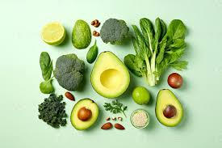
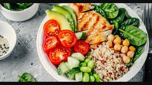
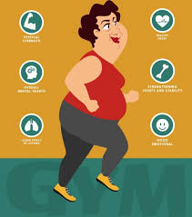
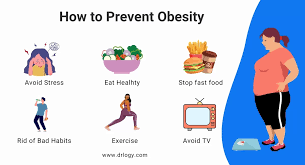

Nutrition and Health Advice
Underweight
Way of Eating: Focus on nutrient-dense foods like nuts, seeds, avocados, and whole grains. Include protein-rich foods like lean meats, beans, and dairy to help build muscle mass. Avoid empty-calorie foods like sugary snacks and sodas.
Healthy Lifestyle: Engage in strength-training exercises to build muscle mass. Aim for small, frequent meals throughout the day to increase calorie intake.
Health Tips: Monitor your calorie intake to ensure you're eating enough. Consult with a healthcare provider to rule out any underlying health issues that might be causing low body weight.
Normal Weight
Way of Eating: Maintain a balanced diet with a variety of fruits, vegetables, whole grains, lean proteins, and healthy fats. Pay attention to portion sizes to avoid overeating.
Healthy Lifestyle: Regular physical activity, such as a mix of cardiovascular exercises and strength training, can help maintain your weight and overall health.
Health Tips: Continue regular health check-ups to monitor your well-being. Stay hydrated and aim for at least 7-8 hours of sleep per night to maintain overall health.
Overweight
Way of Eating: Focus on reducing calorie intake while maintaining a balanced diet. Opt for high-fiber foods such as vegetables, fruits, and whole grains that keep you full longer. Limit intake of sugary drinks and high-fat foods.
Healthy Lifestyle: Increase physical activity with regular exercise. Aim for at least 150 minutes of moderate aerobic activity or 75 minutes of vigorous activity per week, along with strength training.
Health Tips: Monitor your weight and set realistic goals for gradual weight loss. Keep a food journal to track your eating habits and identify areas for improvement.
Obesity Class 1 (Moderate Obesity)
Way of Eating: Prioritize a diet rich in vegetables, fruits, lean proteins, and whole grains. Reduce portion sizes and avoid processed foods high in sugar and unhealthy fats.
Healthy Lifestyle: Increase physical activity and consider working with a fitness professional to create a sustainable exercise plan. Focus on long-term lifestyle changes rather than quick fixes.
Health Tips: Regular health screenings are essential to monitor conditions like high blood pressure, diabetes, and cholesterol levels. Consider consulting with a nutritionist or dietitian for personalized advice.
Obesity Class 2 (Severe Obesity)
Way of Eating: Adopt a low-calorie, nutrient-dense diet. Avoid high-calorie, low-nutrient foods, and focus on whole foods like vegetables, lean meats, and whole grains. Meal planning and portion control are key.
Healthy Lifestyle: Engage in regular physical activity but start slowly if you're not used to exercising. Seek support from a healthcare provider or weight-loss program to help guide your journey.
Health Tips: Regular medical monitoring is crucial. Consider behavioral therapy or counseling to address emotional eating and other underlying factors contributing to weight gain.
Obesity Class 3 (Very Severe or Morbid Obesity)
Way of Eating: Work closely with a healthcare provider to develop a safe and effective weight-loss plan. Focus on a diet that is low in calories but high in essential nutrients. Avoid fad diets and aim for sustainable changes.
Healthy Lifestyle: Start with gentle exercises like walking or swimming to reduce strain on joints. Gradually increase activity levels as you build endurance. Consider seeking support from weight-loss groups or a personal trainer.
Health Tips: Regular monitoring for obesity-related health issues such as heart disease, diabetes, and sleep apnea is essential. Bariatric surgery may be an option for some; discuss this with your healthcare provider.